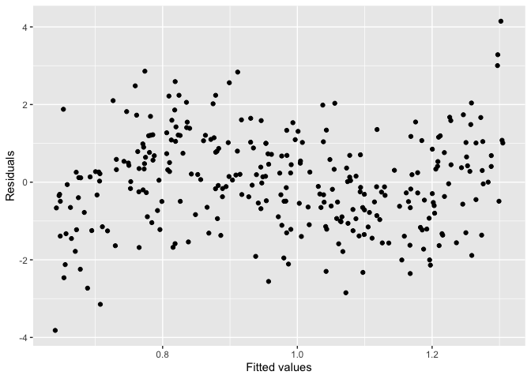
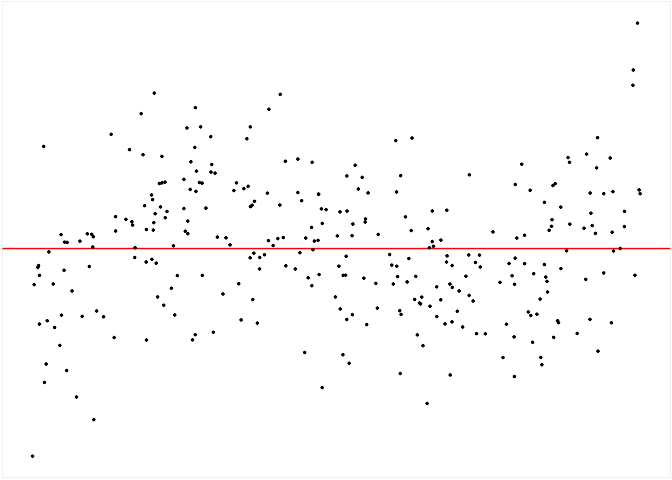
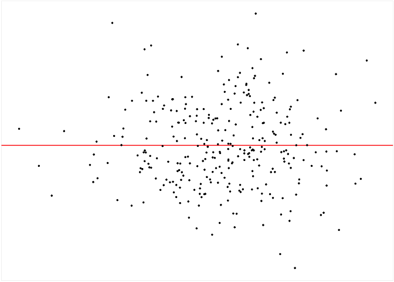
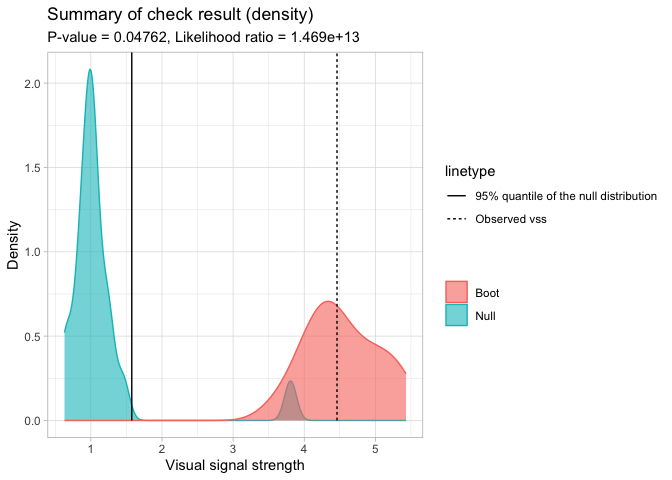

Buja et al. (2009) provides an inferential framework to assess whether residual plots indeed contain visual patterns inconsistent with the model assumptions. However, unlike conventional statistical tests that can be performed computationally in statistical software, the lineup protocol requires human evaluation of images. This characteristic makes it less suitable for large-scale applications, given the associated high labour costs and time requirements.
The autovi package aims to offer tools for automated visual inference of residual plots. Currently, it only supports diagnostic checks for classical normal linear regression models (CNLRM), as the underlying computer vision models are specifically trained for this model class. However, the autovi API is designed to be extensible to other model types. This means you can obtain predictions as long as you provide an appropriate method for generating null residuals through the null_method argument.
Installation
Install the released version from CRAN with
install.packages("autovi")Install the development version from GitHub with:
# install.packages("remotes")
remotes::install_github("TengMCing/autovi")Trained Keras Models
All the available trained Keras models are listed in list_keras_model(). All the trained Keras models listed below will predict a visual signal strength for the visual patterns of the input residual plot. This visual signal strength is essentially an approximation of a Kullback–Leibler divergence based distance metric which quantifies the difference between the actual residual distribution and the reference residual distribution assumed under correct model specification. Details about the methodologies are provided in Chapter 3 of Patrick Li’s PhD thesis.
list_keras_model() %>% pull(model_name)
#> [1] "vss_32" "vss_64" "vss_128" "vss_phn_32" "vss_phn_64"
#> [6] "vss_phn_128"Different Keras models are trained with residual plots obtained from different linear regression models violating various model assumptions.
vss_32, vss_64 and vss_128 are trained with residual plots containing visual patterns indicating non-linearity and heteroskedasticity issues. The number in the model name represents the size of the input image. For instance, 32 means the input image has pixels.
vss_phn_32, vss_phn_64 and vss_phn_128 are also trained with residual plots containing visual patterns indicating non-linearity and heteroskedasticity, but the visual patterns are more complex. Additionally, residual plots with visual patterns of non-normality are also used for these models.
Examples
For this example, we will be using the vss_phn_32 Keras model. The model can be obtained by using get_keras_model().
keras_model <- get_keras_model("vss_phn_32")To illustrate the use of this package, we will define an incorrectly specified model omitting certain higher-order terms of .
The residual plot of the fitted model shows a “S” shape indicating a non-linearity issue.
ggplot() +
geom_point(aes(this_model$fitted.values, this_model$residuals)) +
xlab("Fitted values") +
ylab("Residuals")
To run diagnostics for this fitted model, we can initialize the checker using auto_vi() and have a look at the input residual plot using the plot_resid() method.
checker <- auto_vi(fitted_model = this_model, keras_model = keras_model)
checker$plot_resid()
To predict the visual signal strength of this residual plot, simply use the vss() method.
checker$vss()
#> ✔ Predict visual signal strength for 1 image.
#> # A tibble: 1 × 1
#> vss
#> <dbl>
#> 1 4.46Having the visual signal strength of the residual plot is usually insufficient to determine if the model is correctly specified. Thus, we need to evaluate some null residual plots for comparison.
The checker includes a default method to generate null residuals consistent with the null hypothesis that the fitted model is correctly specified, which is the rotate_resid() method implementing the residual rotation technique. This method is only suitable for CNLRM.
checker$rotate_resid() %>%
checker$plot_resid()
To get predictions for null residual plots, one can use the null_vss() method. The keep_null_data and keep_null_plot tells the method whether to preserve the null residuals and null residuals plots in the result. For models that needs to use a null generating method other than rotate_resid(), the function can be provided via the null_method argument. The only parameter of the provided function should be fitted_model, which is the fitted model object. And it should return a data frame with two columns .fitted and .resid which are fitted values and null residuals respectively.
checker$null_vss(20L,
keep_null_data = FALSE,
keep_null_plot = FALSE)
#> ✔ Generate null data.
#> ✔ Generate null plots.
#> ✔ Compute auxilary inputs.
#> ✔ Predict visual signal strength for 20 images.
#> # A tibble: 20 × 1
#> vss
#> <dbl>
#> 1 1.17
#> 2 1.09
#> 3 1.17
#> 4 0.773
#> 5 1.24
#> 6 0.640
#> 7 0.873
#> 8 1.06
#> 9 1.00
#> 10 1.01
#> 11 3.03
#> 12 1.15
#> 13 1.08
#> 14 0.910
#> 15 1.10
#> 16 0.913
#> 17 0.848
#> 18 1.08
#> 19 0.911
#> 20 0.665If we want to measure the variation of the visual signal strength of the residual plot, we can use the boot_vss() method to get bootstrapped visual signal strength. This method resamples the observations with replacement and refit the regression model. Similarly, keep_boot_data and keep_boot_plot tells the method whether to preserve bootstrapped residuals and plots.
checker$boot_vss(20L,
keep_boot_data = FALSE,
keep_boot_plot = FALSE)
#> ✔ Generate bootstrapped data.
#> ✔ Generate bootstrapped plots.
#> ✔ Compute auxilary inputs.
#> ✔ Predict visual signal strength for 20 images.
#> # A tibble: 20 × 1
#> vss
#> <dbl>
#> 1 4.32
#> 2 4.80
#> 3 5.69
#> 4 4.26
#> 5 4.50
#> 6 5.42
#> 7 4.49
#> 8 4.24
#> 9 4.84
#> 10 4.16
#> 11 4.23
#> 12 4.29
#> 13 5.23
#> 14 4.54
#> 15 3.94
#> 16 4.44
#> 17 4.85
#> 18 5.46
#> 19 4.99
#> 20 4.19To run a comprehensive check including the analysis of null residuals and bootstrapped residuals, use the check() method.
checker$check(null_draws = 20L, boot_draws = 20L)
#> ✔ Generate null data.
#> ✔ Generate null plots.
#> ✔ Compute auxilary inputs.
#> ✔ Predict visual signal strength for 20 images.
#> ✔ Generate bootstrapped data.
#> ✔ Generate bootstrapped plots.
#> ✔ Compute auxilary inputs.
#> ✔ Predict visual signal strength for 20 images.
#> ✔ Predict visual signal strength for 1 image.
#>
#> ── <AUTO_VI object>
#> Status:
#> - Fitted model: lm
#> - Keras model: (None, 32, 32, 3) + (None, 5) -> (None, 1)
#> - Output node index: 1
#> - Result:
#> - Observed visual signal strength: 4.461 (p-value = 0.04762)
#> - Null visual signal strength: [20 draws]
#> - Mean: 1.14
#> - Quantiles:
#> ╔═════════════════════════════════════════════════╗
#> ║ 25% 50% 75% 80% 90% 95% 99% ║
#> ║0.8896 1.0072 1.1204 1.2076 1.3012 1.5755 3.3615 ║
#> ╚═════════════════════════════════════════════════╝
#> - Bootstrapped visual signal strength: [20 draws]
#> - Mean: 4.537 (p-value = 0.04762)
#> - Quantiles:
#> ╔══════════════════════════════════════════╗
#> ║ 25% 50% 75% 80% 90% 95% 99% ║
#> ║4.210 4.457 4.921 5.037 5.294 5.318 5.409 ║
#> ╚══════════════════════════════════════════╝
#> - Likelihood ratio: 0.6794 (boot) / 4.626e-14 (null) = 1.469e+13
#> ℹ See ?autovi::AUTO_VI for the documentation.The check result is stored in the check_result attribute. If you print the checker object, it will show a brief summary of the result.
checker
#>
#> ── <AUTO_VI object>
#> Status:
#> - Fitted model: lm
#> - Keras model: (None, 32, 32, 3) + (None, 5) -> (None, 1)
#> - Output node index: 1
#> - Result:
#> - Observed visual signal strength: 4.461 (p-value = 0.04762)
#> - Null visual signal strength: [20 draws]
#> - Mean: 1.14
#> - Quantiles:
#> ╔═════════════════════════════════════════════════╗
#> ║ 25% 50% 75% 80% 90% 95% 99% ║
#> ║0.8896 1.0072 1.1204 1.2076 1.3012 1.5755 3.3615 ║
#> ╚═════════════════════════════════════════════════╝
#> - Bootstrapped visual signal strength: [20 draws]
#> - Mean: 4.537 (p-value = 0.04762)
#> - Quantiles:
#> ╔══════════════════════════════════════════╗
#> ║ 25% 50% 75% 80% 90% 95% 99% ║
#> ║4.210 4.457 4.921 5.037 5.294 5.318 5.409 ║
#> ╚══════════════════════════════════════════╝
#> - Likelihood ratio: 0.6794 (boot) / 4.626e-14 (null) = 1.469e+13
#> ℹ See ?autovi::AUTO_VI for the documentation.A summary plot can be drawn with the summary_plot() method. The solid line is the 95% sample quantile of the visual signal strength predicted for null residual plots. The dot line is the visual signal strength predicted for the original residual plot. The blue density curve indicates the distribution of visual signal strength predicted for null residual plots. And the red density curve indicates the distribution of visual signal strength predicted for bootstrapped residual plots.
The -value is obtained by computing the ratio of null visual signal strength greater than or equal to observed visual signal strength. The red area along with the solid line indicates how often the fitted model would be considered incorrectly specified if the data can be repetitively drawn from the same data generating process.
For this example, the is rejected because of small -value. It can also be observed that almost all the time the refitted models will be considered as incorrectly specified, so this is a clear rejection. Furthermore, since two density curves are very different from each other, it is very unlikely the original residuals are from the same distribution of null residuals.
checker$summary_plot()
Feature extraction
This package also enables the extraction of features from keras model for other purposes. To extract features from a specific layer of the keras model, one needs to provide the argument extract_feature_from_layer. The following code chunk extract features from the global pooling layer of the keras model.
checker$vss(extract_feature_from_layer = "global_max_pooling2d") %>%
names()
#> ✔ Predict visual signal strength for 1 image.
#> [1] "vss" "f_1" "f_2" "f_3" "f_4" "f_5" "f_6" "f_7" "f_8"
#> [10] "f_9" "f_10" "f_11" "f_12" "f_13" "f_14" "f_15" "f_16" "f_17"
#> [19] "f_18" "f_19" "f_20" "f_21" "f_22" "f_23" "f_24" "f_25" "f_26"
#> [28] "f_27" "f_28" "f_29" "f_30" "f_31" "f_32" "f_33" "f_34" "f_35"
#> [37] "f_36" "f_37" "f_38" "f_39" "f_40" "f_41" "f_42" "f_43" "f_44"
#> [46] "f_45" "f_46" "f_47" "f_48" "f_49" "f_50" "f_51" "f_52" "f_53"
#> [55] "f_54" "f_55" "f_56" "f_57" "f_58" "f_59" "f_60" "f_61" "f_62"
#> [64] "f_63" "f_64" "f_65" "f_66" "f_67" "f_68" "f_69" "f_70" "f_71"
#> [73] "f_72" "f_73" "f_74" "f_75" "f_76" "f_77" "f_78" "f_79" "f_80"
#> [82] "f_81" "f_82" "f_83" "f_84" "f_85" "f_86" "f_87" "f_88" "f_89"
#> [91] "f_90" "f_91" "f_92" "f_93" "f_94" "f_95" "f_96" "f_97" "f_98"
#> [100] "f_99" "f_100" "f_101" "f_102" "f_103" "f_104" "f_105" "f_106" "f_107"
#> [109] "f_108" "f_109" "f_110" "f_111" "f_112" "f_113" "f_114" "f_115" "f_116"
#> [118] "f_117" "f_118" "f_119" "f_120" "f_121" "f_122" "f_123" "f_124" "f_125"
#> [127] "f_126" "f_127" "f_128" "f_129" "f_130" "f_131" "f_132" "f_133" "f_134"
#> [136] "f_135" "f_136" "f_137" "f_138" "f_139" "f_140" "f_141" "f_142" "f_143"
#> [145] "f_144" "f_145" "f_146" "f_147" "f_148" "f_149" "f_150" "f_151" "f_152"
#> [154] "f_153" "f_154" "f_155" "f_156" "f_157" "f_158" "f_159" "f_160" "f_161"
#> [163] "f_162" "f_163" "f_164" "f_165" "f_166" "f_167" "f_168" "f_169" "f_170"
#> [172] "f_171" "f_172" "f_173" "f_174" "f_175" "f_176" "f_177" "f_178" "f_179"
#> [181] "f_180" "f_181" "f_182" "f_183" "f_184" "f_185" "f_186" "f_187" "f_188"
#> [190] "f_189" "f_190" "f_191" "f_192" "f_193" "f_194" "f_195" "f_196" "f_197"
#> [199] "f_198" "f_199" "f_200" "f_201" "f_202" "f_203" "f_204" "f_205" "f_206"
#> [208] "f_207" "f_208" "f_209" "f_210" "f_211" "f_212" "f_213" "f_214" "f_215"
#> [217] "f_216" "f_217" "f_218" "f_219" "f_220" "f_221" "f_222" "f_223" "f_224"
#> [226] "f_225" "f_226" "f_227" "f_228" "f_229" "f_230" "f_231" "f_232" "f_233"
#> [235] "f_234" "f_235" "f_236" "f_237" "f_238" "f_239" "f_240" "f_241" "f_242"
#> [244] "f_243" "f_244" "f_245" "f_246" "f_247" "f_248" "f_249" "f_250" "f_251"
#> [253] "f_252" "f_253" "f_254" "f_255" "f_256"To check all the available layer names, one can list them with the KERAS_WRAPPER class.
KERAS_WRAPPER$list_layer_name(keras_model)
#> [1] "input_1" "grey_scale" "block1_conv1"
#> [4] "batch_normalization" "activation" "block1_conv2"
#> [7] "batch_normalization_1" "activation_1" "block1_pool"
#> [10] "dropout" "block2_conv1" "batch_normalization_2"
#> [13] "activation_2" "block2_conv2" "batch_normalization_3"
#> [16] "activation_3" "block2_pool" "dropout_1"
#> [19] "block3_conv1" "batch_normalization_4" "activation_4"
#> [22] "block3_conv2" "batch_normalization_5" "activation_5"
#> [25] "block3_conv3" "batch_normalization_6" "activation_6"
#> [28] "block3_pool" "dropout_2" "block4_conv1"
#> [31] "batch_normalization_7" "activation_7" "block4_conv2"
#> [34] "batch_normalization_8" "activation_8" "block4_conv3"
#> [37] "batch_normalization_9" "activation_9" "block4_pool"
#> [40] "dropout_3" "block5_conv1" "batch_normalization_10"
#> [43] "activation_10" "block5_conv2" "batch_normalization_11"
#> [46] "activation_11" "block5_conv3" "batch_normalization_12"
#> [49] "activation_12" "block5_pool" "dropout_4"
#> [52] "global_max_pooling2d" "additional_input" "concatenate"
#> [55] "dense" "dropout_5" "activation_13"
#> [58] "dense_1"While running the comprehensive check with the check() method, one can provide the extract_feature_from_layer argument to extract features.
checker$check(null_draws = 20L, boot_draws = 20L, extract_feature_from_layer = "global_max_pooling2d")
#> ✔ Generate null data.
#> ✔ Generate null plots.
#> ✔ Compute auxilary inputs.
#> ✔ Predict visual signal strength for 20 images.
#> ✔ Generate bootstrapped data.
#> ✔ Generate bootstrapped plots.
#> ✔ Compute auxilary inputs.
#> ✔ Predict visual signal strength for 20 images.
#> ✔ Predict visual signal strength for 1 image.
#>
#> ── <AUTO_VI object>
#> Status:
#> - Fitted model: lm
#> - Keras model: (None, 32, 32, 3) + (None, 5) -> (None, 1)
#> - Output node index: 1
#> - Result:
#> - Observed visual signal strength: 4.461 (p-value = 0.04762)
#> - Null visual signal strength: [20 draws]
#> - Mean: 0.9429
#> - Quantiles:
#> ╔═════════════════════════════════════════════════╗
#> ║ 25% 50% 75% 80% 90% 95% 99% ║
#> ║0.7677 0.8874 1.0052 1.0308 1.1291 1.5355 1.7229 ║
#> ╚═════════════════════════════════════════════════╝
#> - Bootstrapped visual signal strength: [20 draws]
#> - Mean: 4.285 (p-value = 0.04762)
#> - Quantiles:
#> ╔══════════════════════════════════════════╗
#> ║ 25% 50% 75% 80% 90% 95% 99% ║
#> ║3.934 4.158 4.409 4.526 4.895 5.184 5.461 ║
#> ╚══════════════════════════════════════════╝
#> - Likelihood ratio: 0.5776 (boot) / 0 (null) = Extremely large
#> ℹ See ?autovi::AUTO_VI for the documentation.The features are also stored in the check_result attribute.
checker$check_result$observed
#> # A tibble: 1 × 257
#> vss f_1 f_2 f_3 f_4 f_5 f_6 f_7 f_8 f_9 f_10 f_11
#> <dbl> <dbl> <dbl> <dbl> <dbl> <dbl> <dbl> <dbl> <dbl> <dbl> <dbl> <dbl>
#> 1 4.46 0.167 0.0687 0 0 0 0.00164 0.0695 0 0.0847 0 0
#> # ℹ 245 more variables: f_12 <dbl>, f_13 <dbl>, f_14 <dbl>, f_15 <dbl>,
#> # f_16 <dbl>, f_17 <dbl>, f_18 <dbl>, f_19 <dbl>, f_20 <dbl>, f_21 <dbl>,
#> # f_22 <dbl>, f_23 <dbl>, f_24 <dbl>, f_25 <dbl>, f_26 <dbl>, f_27 <dbl>,
#> # f_28 <dbl>, f_29 <dbl>, f_30 <dbl>, f_31 <dbl>, f_32 <dbl>, f_33 <dbl>,
#> # f_34 <dbl>, f_35 <dbl>, f_36 <dbl>, f_37 <dbl>, f_38 <dbl>, f_39 <dbl>,
#> # f_40 <dbl>, f_41 <dbl>, f_42 <dbl>, f_43 <dbl>, f_44 <dbl>, f_45 <dbl>,
#> # f_46 <dbl>, f_47 <dbl>, f_48 <dbl>, f_49 <dbl>, f_50 <dbl>, f_51 <dbl>, …This package provide ways to conduct PCA on these features. The feature_pca method will combine the features obtained from the prediction of the observed residual plot, null residual plots, and the bootstrapped residual plots, then conduct PCA on them. The results are the rotated features. The variable set provides the set label of the observation, which can either be “observed”, “null” or “boot”.
checker$feature_pca()
#> # A tibble: 41 × 298
#> f_1 f_2 f_3 f_4 f_5 f_6 f_7 f_8 f_9 f_10 f_11 f_12
#> <dbl> <dbl> <dbl> <dbl> <dbl> <dbl> <dbl> <dbl> <dbl> <dbl> <dbl> <dbl>
#> 1 0.167 0.0687 0 0 0 0.00164 0.0695 0 0.0847 0 0 0.149
#> 2 1.08 4.14 4.10 5.43 2.35 2.04 3.09 2.39 2.01 1.94 4.32 2.43
#> 3 1.10 2.85 2.90 3.08 1.20 1.21 1.69 1.50 1.59 0.828 2.55 1.75
#> 4 0.827 3.20 2.92 3.45 1.50 1.28 1.89 1.61 1.64 1.28 2.66 1.71
#> 5 0.955 3.85 3.74 5.17 2.24 1.97 2.96 2.25 1.81 1.91 4.04 2.23
#> 6 1.22 3.60 3.70 4.70 2.00 1.72 2.66 2.19 1.77 1.57 3.83 2.18
#> 7 1.21 3.41 3.51 4.22 1.75 1.58 2.37 1.99 1.75 1.33 3.47 2.08
#> 8 1.09 3.00 3.04 3.71 1.53 1.40 2.12 1.76 1.53 1.16 3.01 1.85
#> 9 1.02 2.87 2.84 3.42 1.42 1.28 1.94 1.65 1.45 1.09 2.75 1.70
#> 10 0.570 1.72 1.25 1.36 0.270 0.342 0.419 0.545 0.959 0.267 0.913 0.875
#> # ℹ 31 more rows
#> # ℹ 286 more variables: f_13 <dbl>, f_14 <dbl>, f_15 <dbl>, f_16 <dbl>,
#> # f_17 <dbl>, f_18 <dbl>, f_19 <dbl>, f_20 <dbl>, f_21 <dbl>, f_22 <dbl>,
#> # f_23 <dbl>, f_24 <dbl>, f_25 <dbl>, f_26 <dbl>, f_27 <dbl>, f_28 <dbl>,
#> # f_29 <dbl>, f_30 <dbl>, f_31 <dbl>, f_32 <dbl>, f_33 <dbl>, f_34 <dbl>,
#> # f_35 <dbl>, f_36 <dbl>, f_37 <dbl>, f_38 <dbl>, f_39 <dbl>, f_40 <dbl>,
#> # f_41 <dbl>, f_42 <dbl>, f_43 <dbl>, f_44 <dbl>, f_45 <dbl>, f_46 <dbl>, …